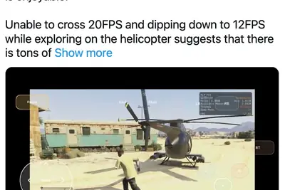
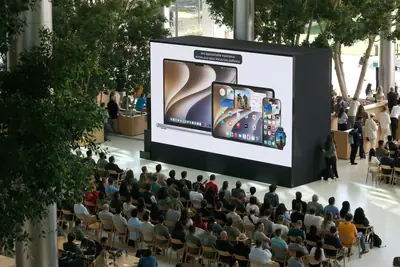
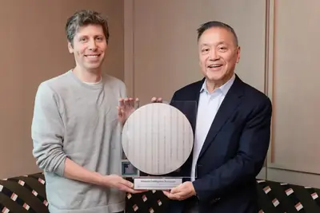
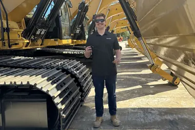
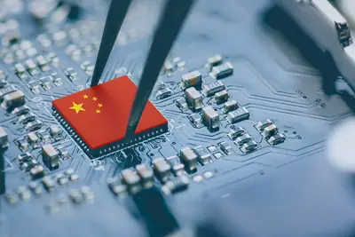
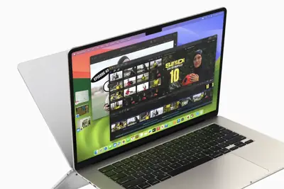
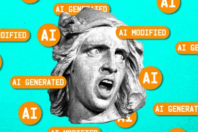
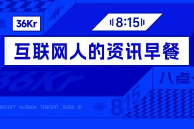

AI 每日新聞彙整
 產品與應用
產品與應用
全部主題
模型與研究
robot
英國研究：AI 聊天機器人提供具體行動指引，安撫情緒效果勝過人類
英國一項最新研究發現，AI 聊天機器人在日常情緒支持情境中，對「憤怒」與「恐懼」等情緒的安撫效果可能優於人類。研究指出，AI 的優勢在於能提供具體、可執行的行動指引，而非僅止於同理回應，顯示 AI 在情緒支持應用上具備實際潛力。
- 科技新報 TechNews 不再只會說「我懂你」，英國研究：AI 提供具體行動指引安撫效果超越人類
llm
七萬次測驗顯示多數大型語言模型穩定偏向自由左派政治立場
一項針對大型語言模型（LLM）的研究透過約七萬次測驗發現，多數主流 LLM 在經濟與社會議題上穩定呈現自由左派傾向，儘管其開發背景多與資本主義體系相關。這項結果凸顯 AI 模型在政治價值觀上可能存在系統性偏差，值得開發者與使用者關注。
- 科技新報 TechNews AI 也有政治立場？7 萬次測驗揭露多數 LLM 穩定偏向自由左派
產品與應用
5.7
AI調度系統接管4米望遠鏡，邁向自主天文台
美國西北大學、芝加哥大學與費米實驗室團隊研發AI調度系統，已接管智利維克托·M·布蘭科4米望遠鏡，指揮5.7億像素的暗能量相機觀測，決策能力與人類調度員相當。
opponfcmax
OPPO A7 Pro Max 將於 8 月 4 日發表，主打 AI 換臉防詐騙與萬毫安電池
OPPO 將於 8 月 4 日發表 A7 Pro Max，配備 10000mAh 大電池、前後 5000 萬畫素雙相機，並主打 AI 換臉識別以防範視訊詐騙。該機搭載 ColorOS 16，通過 72 個月老化流暢度測試，預計採用高通 Snapdragon 4 Gen 5 處理器。
iphonegtamax
愛好者以 Xbox 360 模擬器在 iPhone 17 Pro Max 成功運行《GTA 5》
Reddit 用戶 mertbaris01 利用 XeniOS 模擬器，在 iPhone 17 Pro Max 上以 1280×720 解析度、平均約 19 至 20FPS 運行《GTA 5》，駕駛或飛行時幀率會降至 12FPS 左右且機身明顯發熱。由於模擬層轉換導致 CPU、GPU 資源消耗遠高於原生遊戲，行動晶片仍難以達到主機級效能。

samsunggalaxywatch
三星 Galaxy Watch 9 倫敦實測，輕量設計搭配多元運動追蹤功能
ZDNet 記者在倫敦實測三星 Galaxy Watch 9，認為其輕量舒適的機身與多項追蹤功能對跑者相當實用，能提供即時運動提醒與數據回饋。
macbookfavoriteaccessory
13 美元 MacBook 配件為鍵盤帶來簡單實用的升級體驗
ZDNet 編輯分享一款僅需 13 美元的 MacBook Pro 配件，能為鍵盤帶來明顯且實用的使用體驗提升，被視為最值得入手的投資之一。
frameworklaptopreview
Framework Laptop 13 Pro 評測出色但受 RAM 供應短缺拖累
Framework Laptop 13 Pro 擁有出色的觸控板與電池續航，但售價偏高且供貨受限，RAM 危機使其在市場上遭遇挑戰。
企業與資金
重點awshbmcompute
AWS算力供不應求，亞馬遜結盟OpenAI並加碼資本支出
亞馬遜表示AWS 2027年多數算力已被預訂，2026年資本支出預估由約2,000億美元提高至2,200億美元；第2季AWS營收年增37%達422億美元，創18季最快增速。亞馬遜對OpenAI的500億美元投資已完成，《金融時報》報導可能取得約5%股權。
- TechOrange 科技報橘 【科技早餐】AWS 算力供不應求、亞馬遜結盟 OpenAI，聯發科 AI 晶片第 4 季量產
qfy26apple
蘋果4QFY26面臨晶片漲價、缺料與匯率三重壓力
蘋果2026會計年度第3季銷售強勁，但受AI熱潮推升晶片成本、供應鏈限制及匯率影響，第4季營收展望低於華爾街預估。

- DIGITIMES 零組件漲價、缺料與匯率三壓 蘋果4QFY26挑戰重重
robotnvidiadatacenter
樂金Q2財報創同期新高，機器人與AI資料中心冷卻成新動能
LG Electronics 2026年第2季創公司史上同期第2高紀錄，除家電、電視與車用電子獲利提升外，機器人業務與NVIDIA相關AI資料中心（AIDC）冷卻解決方案成為新成長引擎。
- DIGITIMES 樂金驚喜財報不只靠家電 機器人、NVIDIA與AI成為新亮點
metagoogleamazon
經濟學家漢克：AI成本極高，難以免費大規模取代人力
約翰斯·霍普金斯大學經濟學教授Steve Hanke指出，AI需消耗大量水、電與GPU等硬體，微軟、Alphabet、亞馬遜與Meta今年資本支出合計約7,000億美元，2027年將逼近1兆美元，認為AI難以低成本取代人力。
400appleopenai
蘋果控告 OpenAI 竊密並挖角逾 400 名員工，掀 AI 終端裝置之爭
蘋果指控 OpenAI 竊取商業機密，並在雙方合作破裂後挖角超過 400 名員工，背後實為雙方在 AI 終端裝置市場的競爭。訴訟結果將影響 AI 裝置生態的後續走向。

tibogooglechatgpt
OpenAI 高層 Tibo 證實 Google 早於 ChatGPT 做出對話式 AI 卻未敢發布
OpenAI 核心產品與平台負責人 Thibault Sottiaux（Tibo）證實，Google 早在 ChatGPT 之前就開發出類似技術，但因顧慮品牌風險與對核心業務的衝擊而未發布。此決策凸顯組織慣性可能讓技術領先者錯失市場先機。
omen3100datacenter
20 歲輟學生創辦 Omen AI 攻液冷監控，吸金 3,100 萬美元
AI 晶片發熱量飆升帶動資料中心散熱需求，新創 Omen AI 專注於液冷監控技術，迅速獲得資本市場青睞，募得 3,100 萬美元資金，成為 AI 散熱領域備受矚目的新星。

- 科技新報 TechNews 20 歲輟學生吸金 3,100 萬美元！Omen AI 專攻液冷監控，成 AI 散熱市場新星
晶片與基礎設施
funding2026
京瓷上修2026年度財測，AI核心元件營收看增一成
受惠AI晶片與半導體設備零組件需求擴大，日本京瓷調高2026年度財測，AI晶片相關元件營收看增約一成，並研擬加速原訂每年1,000億日圓的6年投資計畫。
- DIGITIMES 京瓷上修2026年度財測 AI核心元件營收看增1成、擬加速千億日圓投資計畫
duvimmersion193
中國推進193nm浸潤式DUV與開源模型，加速AI自主化
2026年7月底外媒報導，中國持續推進193nm浸潤式DUV曝光機研發與產線驗證，同時聚焦開源AI模型布局，全面加速AI技術自主化。

- 科技新報 TechNews 從本土國產 DUV 設備到開放模型，中國持續聚焦 AI 自主化布局
airmacbookmac
AI擴張引爆記憶體短缺，蘋果MacBook Air供貨吃緊
彭博記者Mark Gurman報導，AI產業大量採購高效能記憶體擠壓消費電子供應，MacBook Air部分型號在蘋果官網需等至8月下旬甚至9月才能出貨，第三方零售商庫存也較以往緊張。

spacexaicolossusxai
SpaceXAI 將拆除 69 台臨時渦輪發電機，改建 1.2GW 永久電廠
馬斯克旗下 SpaceXAI 宣布將在 2027 年 7 月前逐步拆除 Colossus 資料中心 69 台涉嫌污染的移動式渦輪發電機，並同步建設一座裝機容量 1.2GW、含 41 台永久渦輪機的新電廠，該電廠已於 2026 年 3 月取得《清潔空氣法》許可。SpaceXAI 此前曾以 19 天完成 10 萬顆 NVIDIA H200 的部署，創下資料中心最快部署紀錄之一。
政策與法規
safety
AI威脅升溫，日本推動企業資安政策全面升級
生成式AI快速普及，企業雖用以降低成本與提升效率，但高階AI帶來的新型資安風險促使日本全面升級資安政策，強化企業防護機制。
- 科技新報 TechNews AI 愈聰明，企業愈危險？日本資安政策全面升級
samaltmandecel
Sam Altman呼籲產業放慢AI發展節奏
TechCrunch節目《Equity》討論Sam Altman近期呼籲業界「控制AI發展速度」（pace the rate of AI development）的言論，聚焦AI發展是否需要踩煞車的辯論。
- TechCrunch AI Sam Altman and AI’s decel debate
europeansfindentrenched
歐盟新規要求揭露 AI 互動與生成內容，業界憂「揭露疲勞」
歐盟新法要求企業在使用者與 AI 互動或接觸 AI 生成、編輯內容時必須明確告知，引發外界對「揭露疲勞」的擔憂。報導指出歐洲民眾即將切身感受 AI 已深度嵌入日常生活的程度。

openlettersdevelopment
Simon Willison 彙整近期 AI 開發公開信，235 家企業連署支持開源權重
部落客 Simon Willison 整理近幾週 AI 領域多封公開信，其中由微軟主導、7 月 24 日發出的「Open Weights and American AI Leadership」獲 NVIDIA、Amazon、Y Combinator、Linux Foundation 等 235 家 AI 相關企業連署，呼籲美國推動開源模型權重發展。
- Simon Willison Open letters about AI development
安全與倫理
projectglasswingsafety
Anthropic新模型抓漏洞速度超越微軟修補能力
Anthropic新AI模型Mythos的網路安全測試專案「Project Glasswing」發現，AI找出漏洞的速度已超過微軟等廠商的修補速度，凸顯「修補危機」問題。
- 科技新報 TechNews Anthropic 的 AI 抓漏洞速度快過微軟修補，Project Glasswing 揭「修補危機」
intelartistspaying
付費給藝術家能否換得他們對生成式 AI 的支持仍待觀察
生成式 AI 新創長期被插畫家指控未經授權就用其作品訓練模型，引發「等於竊盜」的批評與法律訴訟。支持者則主張這是技術演進的必要過程。報導探討付費補償機制能否化解藝術界對 AI 的敵意。
其他
newslettermonthdeepseek
Simon Willison 七月電子報：盤點 GPT-5.6、Claude Opus 5、Kimi K3 等新模型
Simon Willison 發布七月贊助者電子報，內容涵蓋 OpenAI 與 Anthropic 模型在測試中意外發動網路攻擊的事件，以及 GPT-5.6（Sol、Terra、Luna）、Claude Opus 5、Kimi K3、DeepSeek-V4-Flash-0731 等新模型發布消息，並談及 MCP 與近期公開信趨勢。
- Simon Willison July 2026 newsletter
alibabaxiaomi
蔡崇信宣布離婚，強調不影響阿里職務與持股
阿里巴巴集團董事會主席蔡崇信與妻子吳明華結束近30年婚姻，雙方聲明強調離婚不涉及出售阿里巴巴股票，蔡崇信職務也不受影響，商業合作關係將持續。

fenderceoseems
Fender 執行長稱樂團團員為「類比 AI」，言論引發爭議
Fender 執行長 Edward "Bud" Cole 在 Telecaster 75 週年專訪中將樂團團員比喻為「類比 AI」，言論近日在網路發酵，為公司近期的公關危機再添話題。Fender 近期因其他爭議已陷入負面輿論，此次 AI 相關發言被外界解讀為對音樂人的不尊重。